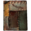
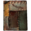
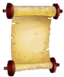

Здесь предоставлены страницы на ID брони и оружия.

Выковываемая броня
Чтобы получить необходимую броню или часть доспеха, вводите консольные команды в следующем виде:
player.additem [ID предмета] [количество]
название ID
 
  Изотовление Улучшение
Изотовление Улучшение
Сыромятный шлем 00013913 10 25 2 Полоски кожи Кожа 2 кожи (ориг. Hide Helmet)